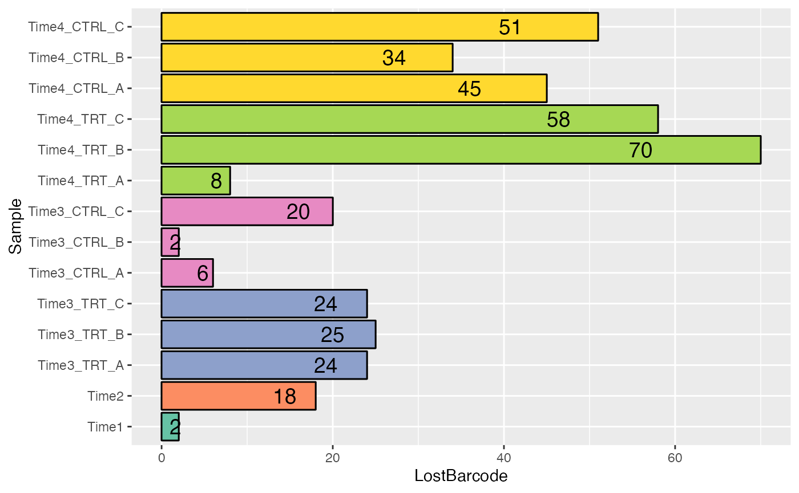

Analysis_Example
Analysis_Example.RmdIntroduction
The R package ScreenR has been developed to perform the analysis of data coming from RNA-seq data generated using Genetic Screening. It is based on the same idea of edgeR but it also integrate the idea at the base of Tidyverse.
Analysis
Read Data
The input of ScreenR is a count table. A count table is usually the starting point of an RNA-seq differentially expressed genes analysis and consists of a matrix containing reads count organized with:
- Genes on the rows
- Samples on the columns
For this vignette we will use as an example a Loss of Function Genetic Screening Performed on THP1 using Metformin at Day3 and Day6. First of all the data has to be read.
data(CountTable_THP1_CONTROL_vs_MET)
data(Table_Annotation)
data <- tidyr::tibble(CountTable_THP1_CONTROL_vs_MET)
colnames(data) <- c(
"Barcode", "T0", "T48_postPURO", "Day3_Met_A", "Day3_Met_B", "Day3_Met_C",
"Day3_DMSO_A", "Day3_DMSO_B", "Day3_DMSO_C", "Day6_Met_A", "Day6_Met_B",
"Day6_Met_C", "Day6_DMSO_A", "Day6_DMSO_B", "Day6_DMSO_C"
)
data <- data %>%
dplyr::mutate(Barcode = as.factor(Barcode)) %>%
dplyr::filter(Barcode != "*")
total_Annotation <- Table_Annotation %>%
tibble::tibble() %>%
dplyr::mutate(Barcode = as.factor(.$Barcode))Object Creation
The second needed step is to create a ScreenR object from the count table. The ScreenR object is created using the function create_screenR_object(). This object will be used to store the most important information to perform the analysis. Most of the ScreenR function takes as main input the ScreenR object to perform the needed operation and return a result.
groups <- colnames(data)[2:length(colnames(data))]
groups <- gsub("(.*)_\\w+", "\\1", groups)
groups <- factor(x = groups, levels = unique(groups))
palette <- c(
"#66c2a5", "#fc8d62", rep("#8da0cb", 3),
rep("#e78ac3", 3),
rep("#a6d854", 3),
rep("#ffd92f", 3)
)
object <- create_screenR_object(
table = data, annotation = total_Annotation, groups = groups,
replicates = c("")
)Computing the needed tables
In order to start the analysis the data has first to be normalized and the data_table.
For what concern the normalizzation ScreenR uses a normalizzation that is called Reads Per Million Sample (RPMS) which has the following mathematical expression:
\[RPMS = \frac{Number \; of \; mapped \; reads \; to \; a \; barcode} { \sum_{sample}{Number\; of \;mapped \; reads}} *10^{6}\]
The number of reads mapped for each Barcode in a sample are normalized by the number of reads in that sample and multiplied by one million. Then has to be computed the data_table. The data_table can be seen as a tidy version of the original count table and will be used throughout the analysis.
object <- normalize_data(object)
object <- compute_data_table(object)Mapped Reads
plot <- plot_mapped_reads(object, palette) +
ggplot2::coord_flip() +
ggplot2::scale_y_continuous(labels = scales::number_format()) +
ggplot2::theme(legend.position = "none") +
ggplot2::ggtitle("Number of Mapped Reads in each sample")
plot
Quality Check
The first step to perform when dealing with RNA-seq data is to check the quality of the samples. In ScreenR this can be done using several methods. For example the distribution can be seen using both boxplots or density plots.
Boxplot Mapped Reads
plot <- distribution_mapped_reads(
object, palette, alpha = 0.8,
type = "boxplot"
) +
theme(
legend.position = "none",
axis.text.x = element_text(angle = 40, hjust = 1)
)
plot
Density plot
plot <- distribution_mapped_reads(
object, palette, alpha = 0.5,
type = "density"
) +
ggplot2::theme(legend.position = "none")
plot
Barcode Lost
Moreover another very important quality check when a Genetic Screening is performed is to check the barcode lost during the experiment. ScreenR implements a function able to compute and plot the number of barcodes lost.
plot <- plot_barcode_lost(screenR_Object = object, palette = palette) +
theme(
legend.position = "none",
axis.text.x = element_text(angle = 40, hjust = 1)
)
plot


Statistical Analysis
Finally can be conducted the real analysis. The statistical Analysis is based on three methods:
- Z-score filtering
- CAMERA filtering
- ROAST filtering
Compute Metrics
In order to compute the Z-score, first a list of metrics has to be computed. In particular a Log2FC is computed for the treated vs control samples in the different conditions. Here for example a treated vs control in different day is computed. Then the different distribution of the Z-score can be plotted using the plot_Zscore_distribution function.
# 2DG
data_with_measure_Met <- list(
Day3 = compute_metrics(
object, control = "DMSO", treatment = "Met",
day = "Day3"
),
Day6 = compute_metrics(
object, control = "DMSO", treatment = "Met",
day = "Day6"
)
)
plot_Zscore_distribution(data_with_measure_Met, alpha = 0.8)
Z-score hit
Now that the metrics has been computed the hits according to Z-score can be found. This in ScreenR is done using the find_zscore_hit function.
zscore_hit_Met <- list(
Day3 = find_zscore_hit(
table_treate_vs_control = data_with_measure_Met$Day3,
number_barcode = 7, metric = "median"
),
Day6 = find_zscore_hit(
table_treate_vs_control = data_with_measure_Met$Day6,
number_barcode = 7, metric = "median"
)
)
zscore_hit_Met## $Day3
## # A tibble: 30 × 2
## Gene numberOfBarcode
## <fct> <int>
## 1 ASF1A 8
## 2 BRD3 8
## 3 CBX1 8
## 4 CBX8 9
## 5 CHST13 8
## 6 EED 8
## 7 ENO3 8
## 8 FBP2 8
## 9 HDAC1 8
## 10 HERC3 9
## # … with 20 more rows
##
## $Day6
## # A tibble: 30 × 2
## Gene numberOfBarcode
## <fct> <int>
## 1 ACOX2 9
## 2 BAZ1B 8
## 3 BAZ2B 8
## 4 BRD9 8
## 5 CHAF1A 8
## 6 CLOCK 9
## 7 EP300 8
## 8 GPT 8
## 9 H2AFV 9
## 10 HECTD3 9
## # … with 20 more rowsCAMERA
The same can be done with the CAMERA hit using the function find_camera_hit.
groupss <- c(
rep("T0/T48", 4),
as.character(groups[5:length(groups)])
)
matrix_model <- model.matrix(~0 + groups)
colnames(matrix_model) <- unique(groups)
camera_hit_Met <- list(
Day3 = find_camera_hit(
screenR_Object = object, matrix_model = matrix_model,
contrast = "Day3_Met"
),
Day6 = find_camera_hit(
screenR_Object = object, matrix_model = matrix_model,
contrast = "Day6_Met"
)
)
camera_hit_Met## $Day3
## # A tibble: 281 × 5
## Gene NGenes Direction PValue FDR
## <chr> <dbl> <fct> <dbl> <dbl>
## 1 INPP5E 10 Down 0.0131 0.522
## 2 LDHAL6B 10 Down 0.0189 0.674
## 3 CHD2 10 Down 0.0324 0.906
## 4 TRIM43B 10 Down 0.0414 0.906
## 5 TRIM9 9 Down 0.0447 0.906
## 6 TYMS 9 Down 0.0528 0.906
## 7 PDHA2 10 Down 0.0584 0.906
## 8 PRDM4 10 Down 0.0594 0.906
## 9 HUWE1 10 Down 0.0646 0.906
## 10 LUC 32 Down 0.0698 0.906
## # … with 271 more rows
##
## $Day6
## # A tibble: 269 × 5
## Gene NGenes Direction PValue FDR
## <chr> <dbl> <fct> <dbl> <dbl>
## 1 INPP5E 10 Down 0.0131 0.779
## 2 LDHAL6B 10 Down 0.0201 0.941
## 3 CHD2 10 Down 0.0285 0.969
## 4 PDHA2 10 Down 0.0316 0.969
## 5 TRIM9 9 Down 0.0355 0.969
## 6 TYMS 9 Down 0.0370 0.969
## 7 TRIM62 9 Down 0.0437 0.969
## 8 TRIM43B 10 Down 0.0491 0.969
## 9 ME3 10 Down 0.0500 0.969
## 10 HUWE1 10 Down 0.0584 0.969
## # … with 259 more rowsROAST
Last but not least this is done also for the ROAST hit using the function
find_roast_hit.
roast_hit_Met <- list(
Day3 = find_roast_hit(
screenR_Object = object, matrix_model = matrix_model,
contrast = "Day3_Met"
),
Day6 = find_roast_hit(
screenR_Object = object, matrix_model = matrix_model,
contrast = "Day6_Met"
)
)
roast_hit_Met## $Day3
## # A tibble: 534 × 9
## Gene NGenes PropDown PropUp Direction PValue FDR PValue.Mixed FDR.Mixed
## <chr> <int> <dbl> <dbl> <fct> <dbl> <dbl> <dbl> <dbl>
## 1 LUC 32 1 0 Down 0.0001 0.0001 0.0001 0.0001
## 2 PSMA1 12 1 0 Down 0.0001 0.0001 0.0001 0.0001
## 3 RPL30 12 1 0 Down 0.0001 0.0001 0.0001 0.0001
## 4 SEPT5 10 1 0 Down 0.0001 0.0001 0.0001 0.0001
## 5 SEPT9 10 1 0 Down 0.0001 0.0001 0.0001 0.0001
## 6 ACAA1 10 1 0 Down 0.0001 0.0001 0.0001 0.0001
## 7 ACAA2 10 1 0 Down 0.0001 0.0001 0.0001 0.0001
## 8 ACACA 10 1 0 Down 0.0001 0.0001 0.0001 0.0001
## 9 ACACB 10 1 0 Down 0.0001 0.0001 0.0001 0.0001
## 10 ACAD11 10 1 0 Down 0.0001 0.0001 0.0001 0.0001
## # … with 524 more rows
##
## $Day6
## # A tibble: 534 × 9
## Gene NGenes PropDown PropUp Direction PValue FDR PValue.Mixed FDR.Mixed
## <chr> <int> <dbl> <dbl> <fct> <dbl> <dbl> <dbl> <dbl>
## 1 LUC 32 1 0 Down 0.0001 0.0001 0.0001 0.0001
## 2 PSMA1 12 1 0 Down 0.0001 0.0001 0.0001 0.0001
## 3 RPL30 12 1 0 Down 0.0001 0.0001 0.0001 0.0001
## 4 SEPT5 10 1 0 Down 0.0001 0.0001 0.0001 0.0001
## 5 SEPT9 10 1 0 Down 0.0001 0.0001 0.0001 0.0001
## 6 ACAA1 10 1 0 Down 0.0001 0.0001 0.0001 0.0001
## 7 ACAA2 10 1 0 Down 0.0001 0.0001 0.0001 0.0001
## 8 ACACA 10 1 0 Down 0.0001 0.0001 0.0001 0.0001
## 9 ACACB 10 1 0 Down 0.0001 0.0001 0.0001 0.0001
## 10 ACAD11 10 1 0 Down 0.0001 0.0001 0.0001 0.0001
## # … with 524 more rowsFind Common Hit
ScreenR consider as final hit only the one present in common among the three methods. In particular two strategy are possible:
- Are considered candidate Hits the one present in at least two of the three methods
- Are considered candidate Hits the one present in all of the three methods
common_hit_Met_at_least_2 <- list(
Day3 = find_common_hit(
zscore_hit_Met$Day3, camera_hit_Met$Day3, roast_hit_Met$Day3,
common_in = 2
),
Day6 = find_common_hit(
zscore_hit_Met$Day6, camera_hit_Met$Day6, roast_hit_Met$Day6,
common_in = 2
)
)
common_hit_Met_at_least_3 <- list(
Day3 = find_common_hit(
zscore_hit_Met$Day3, camera_hit_Met$Day3, roast_hit_Met$Day3,
common_in = 3
),
Day6 = find_common_hit(
zscore_hit_Met$Day6, camera_hit_Met$Day6, roast_hit_Met$Day6,
common_in = 3
)
)Plot common hit
The hits can be easily visualized using the plot_common_hit function.
plot_common_hit(
hit_zscore = zscore_hit_Met$Day3, hit_camera = camera_hit_Met$Day3,
roast_hit_Met$Day3
)## Warning in sprintf("%d", n, 100 * n/sum(n)): one argument not used by format
## '%d'
## R version 4.1.2 (2021-11-01)
## Platform: x86_64-apple-darwin17.0 (64-bit)
## Running under: macOS Big Sur 10.16
##
## Matrix products: default
## BLAS: /Library/Frameworks/R.framework/Versions/4.1/Resources/lib/libRblas.0.dylib
## LAPACK: /Library/Frameworks/R.framework/Versions/4.1/Resources/lib/libRlapack.dylib
##
## locale:
## [1] it_IT.UTF-8/it_IT.UTF-8/it_IT.UTF-8/C/it_IT.UTF-8/it_IT.UTF-8
##
## attached base packages:
## [1] stats graphics grDevices utils datasets methods base
##
## other attached packages:
## [1] ScreenR_0.1.0 edgeR_3.36.0 limma_3.50.1 magrittr_2.0.2 tidyr_1.2.0
## [6] dplyr_1.0.8 ggplot2_3.3.5
##
## loaded via a namespace (and not attached):
## [1] tidyselect_1.1.1 locfit_1.5-9.4 xfun_0.29 bslib_0.3.1
## [5] purrr_0.3.4 splines_4.1.2 lattice_0.20-45 colorspace_2.0-3
## [9] vctrs_0.3.8 generics_0.1.2 htmltools_0.5.2 yaml_2.3.5
## [13] utf8_1.2.2 rlang_1.0.1 pkgdown_2.0.2 jquerylib_0.1.4
## [17] pillar_1.7.0 glue_1.6.1 withr_2.4.3 DBI_1.1.2
## [21] lifecycle_1.0.1 stringr_1.4.0 munsell_0.5.0 gtable_0.3.0
## [25] ragg_1.2.2 memoise_2.0.1 evaluate_0.15 labeling_0.4.2
## [29] knitr_1.37 fastmap_1.1.0 fansi_1.0.2 highr_0.9
## [33] Rcpp_1.0.8 scales_1.1.1 cachem_1.0.6 desc_1.4.0
## [37] jsonlite_1.7.3 farver_2.1.0 systemfonts_1.0.4 fs_1.5.2
## [41] textshaping_0.3.6 digest_0.6.29 stringi_1.7.6 grid_4.1.2
## [45] rprojroot_2.0.2 ggvenn_0.1.9 cli_3.2.0 tools_4.1.2
## [49] sass_0.4.0 tibble_3.1.6 crayon_1.5.0 pkgconfig_2.0.3
## [53] ellipsis_0.3.2 assertthat_0.2.1 rmarkdown_2.11 rstudioapi_0.13
## [57] R6_2.5.1 compiler_4.1.2